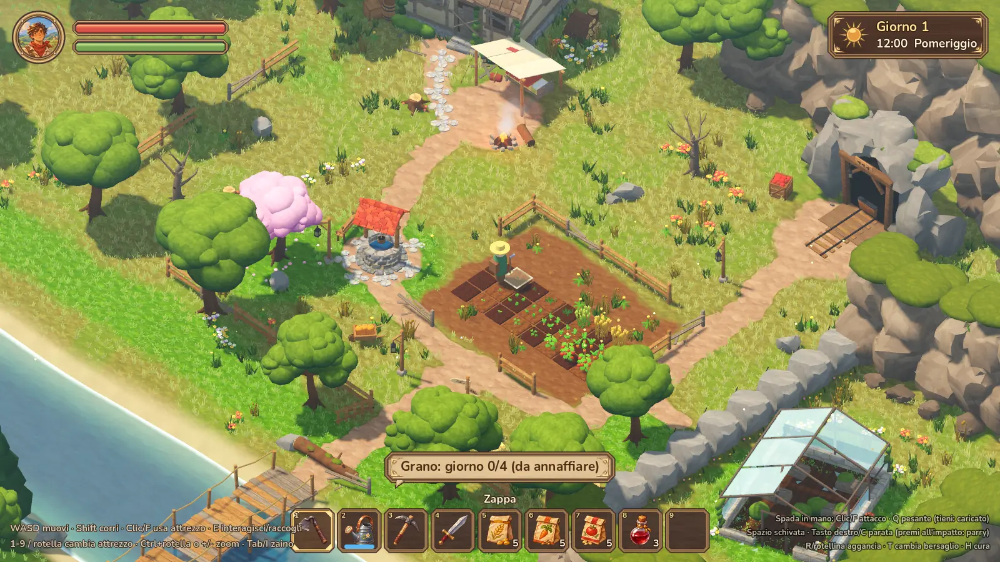
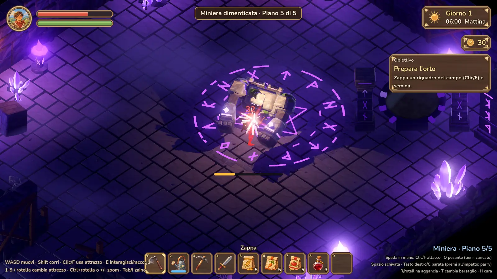
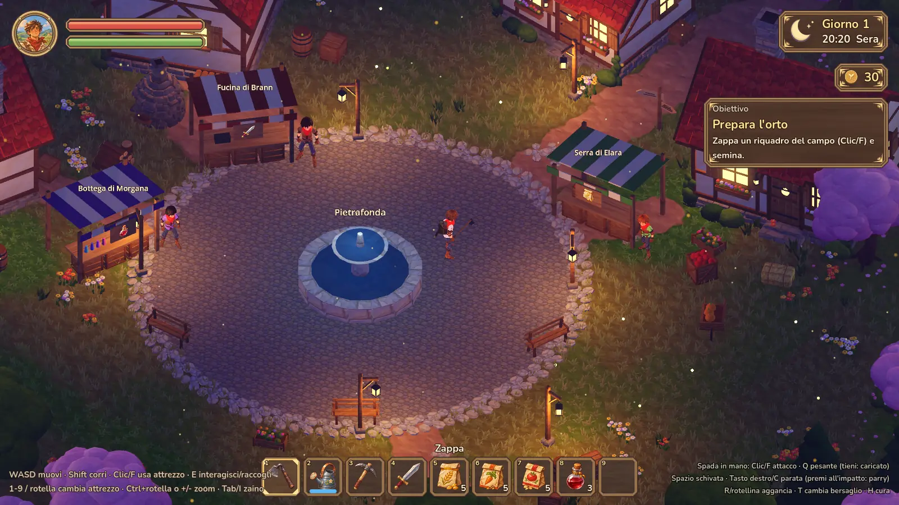
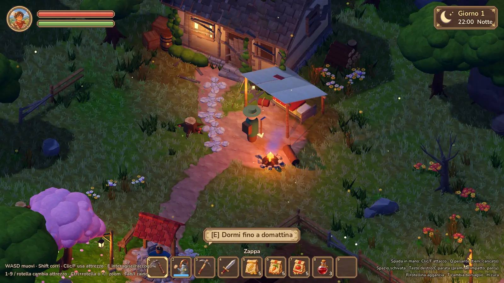
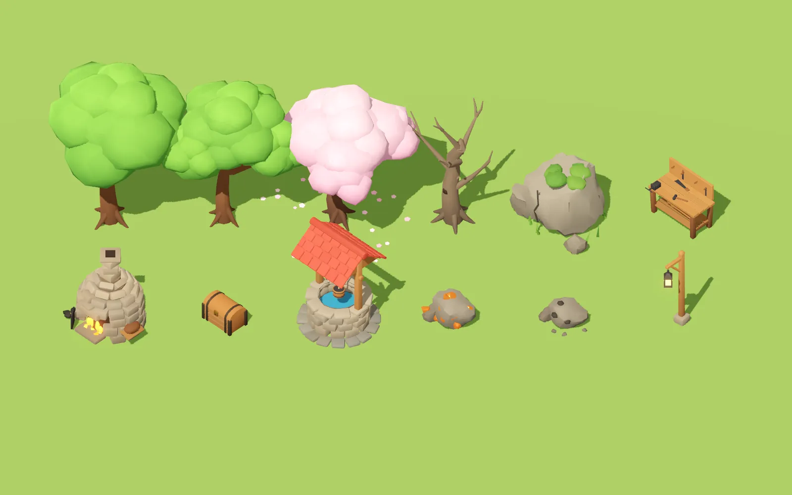

Game Dev package
A built-in package for making games in Godot with coding agents. It brings the skills; Connecto makes sure Godot is on the machine, and from version 0.3.11 Blender and FFmpeg too.
Game Dev is a Skills & Plugins package that ships with Connecto, next to the default one. It is not the default: you add it to the projects where you make a game. Its skills are written for Godot 4 and GDScript, and for agents that work without the editor open: they build, check, test and look at the game from the command line.

What it does
It gives your agents a way to make a game that holds together as it grows:
- Design first, and small. A one-page design and milestones whose "done" can be seen in a screenshot or a video.
- Every change checked. Godot runs headless to import, check scripts and run the tests, so an agent sees an error before you do.
- Real 3D art. Models come from Blender Python scripts, run without the Blender window and exported as
.glbfor Godot. - Playtests that look. A bot plays the game with fixed seeds; the playtester judges it on screenshots, frames pulled from recordings, and logs, and files bugs instead of fixing them.
- Many sessions at once. A guide for a coordinator who hands the game out to gameplay coders, art sessions and reviewers in parallel Connecto terminals.
The skills
Each skill runs when the request fits it, or when you name it.
game-design
Turns an idea into design/gdd.md: a one-page design kept to the size of one developer, the first slice to build, and milestones checked by evidence. It asks only what it cannot guess (genre, 2D or 3D, platforms, art style, time). A design you already wrote is condensed faithfully, not rewritten.
Its team guide is for running many sessions on one game: gameplay first on placeholder art, art made in parallel as files only, then a separate integration step; folders each session owns; a contract between gameplay and art (clip names, attachment points); and a commit at every milestone that passes its playtest.
godot-game
The Godot workflow, from a new project to an export:
- Headless: import, check every change, run the tests, export.
- Recordings: the game played and recorded frame by frame with
--write-movie. This needs a real display, not a headless run; on macOS the game window must stay visible. - A test runner that really fails: three small files and no add-on. A run passes only when Godot exits 0 and its last line says
TESTS RESULT: PASS; an engine error, a missing verdict or a time limit is a failure. GdUnit4 is an option. - Godot gotchas: the traps agents fall into with nodes, time, physics, the camera, imports and saves.
- Art from Blender: kits of models built by script, checked after import and then looked at, characters and animation judged on frames.
- The editor through the godot-ai MCP server, when you want it.
game-playtest
Takes a game from "it compiles" to "it plays". Runs are made repeatable (fixed seeds, a fixed timestep, waits counted in physics ticks, a save file per test). A bot drives the game like a player. The evidence is screenshots, video frames pulled with FFmpeg and logs, and the verdict compares them with the acceptance criteria in the design. The playtester reports; it does not fix, so nobody grades their own work.
The tools it needs
| Tool | Version | What for |
|---|---|---|
| Godot | 4.7 or a later 4.x | The engine. Agents build, check, run and export the game with its command line. Godot 5 is not used: the skills are written for Godot 4. |
| Blender | 4.2 or later | The game's 3D models: agents write Blender Python scripts, run them headless (blender -b -P) and export .glb files. |
| FFmpeg | 4.4 or later | Pulls frames and contact sheets out of the game's recordings, so agents can look at motion and animation. |
All three are free and open source. None needs an account or a licence to accept.
Blender and FFmpeg are checked from Connecto 0.3.11. Earlier versions check for Godot only; install Blender and FFmpeg yourself before you use the art and playtest steps.
How Connecto installs them
Connecto looks for each tool where it is usually installed, and reads its version. When one is missing or too old, it offers to install it with your system's package manager:
| System | Godot | Blender | FFmpeg |
|---|---|---|---|
| macOS | brew install --cask godot | brew install --cask blender | brew install ffmpeg |
| Windows | winget install -e --id GodotEngine.GodotEngine | winget install -e --id BlenderFoundation.Blender | winget install -e --id Gyan.FFmpeg |
| Linux | Flatpak: org.godotengine.Godot | Flatpak: org.blender.Blender | apt-get, dnf, pacman or zypper, whichever is there |
- Nothing runs without your yes. The dialog shows the exact command. Install… asks again, and only Run it opens a shell terminal in the project, named Install <tool>, that types the command once. You watch it work and answer any password or Homebrew prompt there.
- Or do it by hand. Each tool also has manual steps and a download link. Once it is installed, click I've installed it, check again.
- No tools, no package. The package cannot be added while a tool is missing, too old, or still being checked. Cancel leaves it off.
Turn it on for a project
- Open the project's settings from the gear on its row, and choose Packages.
- Under ADDED PACKAGES, click + Game Dev. If every tool is already installed, the package is added at once.
- If a tool is missing, too old or still being checked, a dialog opens instead. It lists Godot, Blender and FFmpeg, each found (with its version) or missing. Install what is missing, from the dialog or by hand, then click Add Game Dev, which turns on once every tool is found.
- Connecto copies the skills into the project for the tools set under TOOLS:
.claudefor Claude Code,.agentsfor Codex, Pi, Antigravity and OpenCode. - Restart a running terminal to give it the skills, then ask it for a game, or start with the design: "Use game-design: a small cozy farming game in 3D."
A project that already had Game Dev before 0.3.11 is updated to the new version without being asked. If Blender or FFmpeg is missing, the project's status says so and how to install it, and the skills ask before a step that needs them.
Some things are offered only when the work needs them, and always with your OK: the GdUnit4 add-on, the godot-ai server, Godot's export templates, downloaded art packs, and a Python environment for image work. Generated concept images come from an agent that can make images, such as Codex; without one, the skills use placeholder art.
Like the default package, Game Dev cannot be edited or deleted. To change it, create a package that extends it.
Made with it: Roots & Ruins
An isometric 3D farming game with a soulslike roguelite in its mines: farm by day, go down five floors of rooms, fight, and bring back what you find. It was built in Godot 4.7 by one coordinator and about a dozen agent sessions working in parallel. The first three images below are from its playtests; the last is a preview of its models in Godot.



